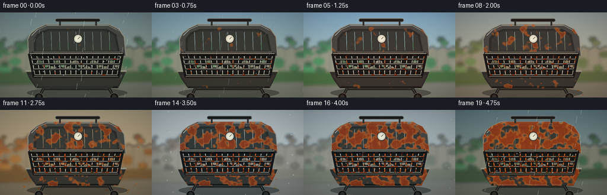
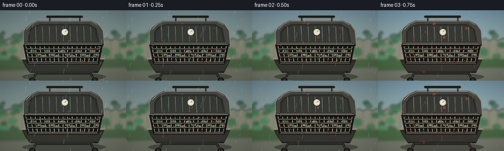

CODING AGENTS AS PIXEL WORLD MODELS
traex/GPT-5.6-Sol · material_0047
点击播放 · 原生 RGB 像素
逐轮保存的候选
回放视频、检查图与代码变化。
每份候选均可单独播放。实际图片检查记录在下方工具轨迹中。
候选 01播放与检查图
点击播放 · 原生 RGB 像素


展开代码变化
--- 上一保存版本
+++ 本次保存版本
@@ -0,0 +1,272 @@
+from pathlib import Path
+import math
+import numpy as np
+import cv2
+from PIL import Image, ImageDraw, ImageFilter
+import artifact_io
+
+# Procedural, deterministic time-lapse of a backyard barbecue.
+W, H, N = 256, 144, 20
+S = 3
+WW, HH = W*S, H*S
+rng = np.random.default_rng(4701)
+
+def sc(v): return int(round(v*S))
+def pts(seq): return [(sc(x), sc(y)) for x,y in seq]
+
+def lerp_keys(t, values):
+ keys = [v[0] for v in values]
+ if t <= keys[0]: return np.array(values[0][1], float)
+ if t >= keys[-1]: return np.array(values[-1][1], float)
+ for i in range(len(values)-1):
+ if keys[i] <= t <= keys[i+1]:
+ u=(t-keys[i])/(keys[i+1]-keys[i])
+ u=u*u*(3-2*u)
+ return np.array(values[i][1])*(1-u)+np.array(values[i+1][1])*u
+
+def noise_field(seed, coarse=(20,34), blur=2.0):
+ rr=np.random.default_rng(seed)
+ a=rr.random(coarse).astype(np.float32)
+ a=cv2.resize(a,(WW,HH),interpolation=cv2.INTER_CUBIC)
+ a=cv2.GaussianBlur(a,(0,0),blur*S)
+ a=(a-a.min())/(a.max()-a.min()+1e-6)
+ return a
+
+rust_noise = .62*noise_field(91,(18,31),1.2)+.28*noise_field(17,(39,67),.5)+.10*noise_field(103,(8,13),2.0)
+pit_noise = noise_field(113,(50,84),.25)
+# fixed background objects
+bokeh = []
+for i in range(90):
+ bokeh.append((rng.uniform(-5,261), rng.uniform(42,110), rng.uniform(2.5,10), rng.uniform(.65,1.25), rng.uniform(-.12,.12)))
+leaf_ground = [(rng.uniform(8,248),rng.uniform(112,142),rng.uniform(-2.8,2.8),rng.uniform(1.2,2.8)) for _ in range(30)]
+
+# masks that confine corrosion to metal surfaces
+def shape_mask(kind):
+ im=Image.new('L',(WW,HH),0); d=ImageDraw.Draw(im)
+ if kind=='hood_outer':
+ d.polygon(pts([(48,73),(47,45),(52,35),(62,27),(77,20),(184,20),(200,28),(209,41),(212,73)]),fill=255)
+ d.polygon(pts([(57,68),(57,44),(65,34),(80,28),(181,28),(196,37),(202,68)]),fill=0)
+ elif kind=='hood_inner':
+ d.polygon(pts([(57,68),(57,44),(65,34),(80,28),(181,28),(196,37),(202,68)]),fill=255)
+ elif kind=='body':
+ d.polygon(pts([(43,99),(213,99),(199,128),(61,128)]),fill=255)
+ return np.asarray(im,dtype=np.float32)/255
+MASKS={k:shape_mask(k) for k in ('hood_outer','hood_inner','body')}
+
+def corrosion_layer(progress, kind):
+ # Coverage expands from isolated orange freckles to broad, dark pitted rust.
+ mask=MASKS[kind]
+ local=rust_noise + (pit_noise-.5)*.12
+ threshold=.84-.51*progress
+ edge=np.clip((local-threshold)/.12,0,1)
+ alpha=mask*edge*(.50+.35*progress)
+ # dark brown pits live inside older orange blooms
+ old=np.clip((local-(threshold+.10))/0.11,0,1)
+ r=150+48*(1-old)+13*pit_noise
+ g=55+42*(1-old)+9*pit_noise
+ b=22+15*(1-old)
+ arr=np.dstack([r,g,b,np.clip(alpha*255,0,255)]).astype(np.uint8)
+ return Image.fromarray(arr,'RGBA')
+
+def line(draw, xy, fill, width=1): draw.line(pts(xy),fill=fill,width=max(1,sc(width)),joint='curve')
+def ellipse(draw, box, fill, outline=None, width=1):
+ draw.ellipse(tuple(sc(x) for x in box),fill=fill,outline=outline,width=max(1,sc(width)))
+def polygon(draw, xy, fill): draw.polygon(pts(xy),fill=fill)
+def rounded(draw, box, rad, fill, outline=None, width=1):
+ draw.rounded_rectangle(tuple(sc(x) for x in box),radius=sc(rad),fill=fill,outline=outline,width=max(1,sc(width)))
+
+def render(fi):
+ t=fi/(N-1)
+ # Seasons: wet spring -> warm summer -> autumn -> cold winter -> wet spring.
+ sky=lerp_keys(t,[(0,(117,139,145)),(.28,(129,178,207)),(.55,(166,153,124)),(.77,(178,188,190)),(1,(99,122,130))])
+ horizon=lerp_keys(t,[(0,(149,163,142)),(.28,(185,205,185)),(.55,(185,158,116)),(.77,(200,205,201)),(1,(137,151,137))])
+ foliage=lerp_keys(t,[(0,(48,105,59)),(.3,(37,118,56)),(.58,(154,84,29)),(.77,(96,88,71)),(1,(49,89,51))])
+ ground=lerp_keys(t,[(0,(72,96,66)),(.3,(66,113,65)),(.58,(119,90,54)),(.77,(139,139,126)),(1,(62,82,59))])
+ yy=np.linspace(0,1,HH)[:,None,None]
+ base=np.zeros((HH,WW,3),float)
+ top=sky[None,None,:]; bot=horizon[None,None,:]
+ mix=np.clip(yy/.83,0,1)
+ base[:]=top*(1-mix)+bot*mix
+ fine=np.random.default_rng(700+fi).normal(0,1.2,(HH,WW,1))
+ base=np.clip(base+fine,0,255).astype(np.uint8)
+ bg=Image.fromarray(base,'RGB').convert('RGBA')
+ # distant wooden fence, kept deliberately soft
+ far=Image.new('RGBA',(WW,HH),(0,0,0,0)); d=ImageDraw.Draw(far)
+ fence=np.array((124,114,93))*.60+horizon*.40
+ d.rectangle((0,sc(62),WW,sc(112)),fill=tuple(fence.astype(int))+(255,))
+ for x in range(-7,264,18):
+ shade=int(8*math.sin(x*.32))
+ d.rectangle((sc(x),sc(61),sc(x+16),sc(113)),fill=tuple(np.clip(fence+shade,0,255).astype(int))+(210,))
+ line(d,[(x+16,62),(x+16,112)],(63,60,52,90),.7)
+ polygon(d,[(x,62),(x+8,57),(x+16,62)],tuple(np.clip(fence+5,0,255).astype(int))+(225,))
+ # organic out-of-focus foliage
+ for i,(x,y,r,shade,hue) in enumerate(bokeh):
+ seasonal_visibility=1.0 if t<.66 or t>.89 else max(.2,1-(t-.66)*2.2)
+ rr=r*(.72+.28*seasonal_visibility)
+ c=foliage*np.array([1+hue,1-.15*hue,1-.25*hue])*shade
+ c=np.clip(c,0,255).astype(int)
+ ellipse(d,(x-rr,y-rr*.65,x+rr,y+rr*.65),tuple(c)+(int(90+80*seasonal_visibility),))
+ # lawn and patio
+ polygon(d,[(0,101),(256,99),(256,144),(0,144)],tuple(ground.astype(int))+(240,))
+ polygon(d,[(0,124),(256,117),(256,144),(0,144)],(88,87,78,150))
+ line(d,[(0,133),(256,126)],(48,53,47,85),1)
+ far=far.filter(ImageFilter.GaussianBlur(sc(2.2)))
+ bg=Image.alpha_composite(bg,far)
+
+ # fallen leaves become abundant in autumn and remain faint in winter
+ env=Image.new('RGBA',(WW,HH),(0,0,0,0)); de=ImageDraw.Draw(env)
+ leaf_amount=math.exp(-((t-.59)/.16)**2)
+ for i,(x,y,a,r) in enumerate(leaf_ground):
+ if (i+1)/len(leaf_ground)<leaf_amount:
+ col=(151+int(40*(i%3==0)),65+10*(i%4),20,180)
+ polygon(de,[(x-r,y),(x,y-r*.45),(x+r,y),(x,y+r*.45)],col)
+ bg=Image.alpha_composite(bg,env)
+
+ # Ground shadow anchors the barbecue.
+ scene=Image.new('RGBA',(WW,HH),(0,0,0,0)); d=ImageDraw.Draw(scene)
+ ellipse(d,(45,127,215,145),(20,25,23,105))
+ # legs and wheels
+ line(d,[(78,119),(67,141)],(30,32,29,255),5); line(d,[(78,119),(67,141)],(100,101,91,255),1)
+ line(d,[(179,120),(191,141)],(27,29,27,255),5); line(d,[(179,120),(191,141)],(98,97,87,255),1)
+ line(d,[(74,130),(184,130)],(38,39,34,255),3)
+ ellipse(d,(58,136,73,149),(23,24,22,255),(99,97,83,255),1)
+ ellipse(d,(185,136,200,149),(23,24,22,255),(99,97,83,255),1)
+ ellipse(d,(62,139,69,146),(52,52,46,255))
+ ellipse(d,(189,139,196,146),(52,52,46,255))
+ # open lid silhouette and outer rim
+ polygon(d,[(48,73),(47,45),(52,35),(62,27),(77,20),(184,20),(200,28),(209,41),(212,73)],(71,72,67,255))
+ line(d,[(48,73),(47,45),(52,35),(62,27),(77,20),(184,20),(200,28),(209,41),(212,73)],(151,150,135,255),1.5)
+ # cool highlight on weathered lid edge
+ line(d,[(53,39),(63,29),(79,22),(183,22),(198,30)],(185,186,172,150),1)
+ # inner lid, subtle radial streaking
+ polygon(d,[(57,68),(57,44),(65,34),(80,28),(181,28),(196,37),(202,68)],(43,46,43,255))
+ polygon(d,[(61,65),(61,45),(68,37),(82,31),(178,31),(192,39),(198,65)],(54,57,52,255))
+ for j in range(9):
+ x=72+j*14
+ line(d,[(x,33),(x+1,64)],(76,75,65,45),1)
+ bg=Image.alpha_composite(bg,scene)
+ # corrosion on lid before rim details
+ bg=Image.alpha_composite(bg,corrosion_layer(t,'hood_outer'))
+ inner_cor=corrosion_layer(min(1,t*1.12),'hood_inner')
+ bg=Image.alpha_composite(bg,inner_cor)
+ scene=Image.new('RGBA',(WW,HH),(0,0,0,0)); d=ImageDraw.Draw(scene)
+ # lid hinge, thermometer, handle
+ line(d,[(55,68),(204,68)],(27,29,27,255),4)
+ line(d,[(56,67),(203,67)],(143,139,119,255),1)
+ ellipse(d,(124,37,139,52),(211,209,188,255),(40,42,39,255),1)
+ ellipse(d,(127,40,136,49),(236,234,211,255))
+ line(d,[(131.5,44.5),(134.5,41.5)],(65,51,40,255),.8)
+ rounded(d,(93,10,169,16),3,(29,30,28,255),(119,121,113,255),1)
+ line(d,[(101,15),(101,22)],(47,49,46,255),3); line(d,[(162,15),(162,22)],(47,49,46,255),3)
+ # basin / front body
+ polygon(d,[(43,98),(213,98),(207,112),(199,128),(61,128),(50,113)],(45,47,43,255))
+ polygon(d,[(49,106),(207,106),(198,126),(62,126)],(55,55,49,255))
+ line(d,[(43,99),(213,99)],(151,149,132,255),3)
+ line(d,[(62,126),(198,126)],(22,24,22,255),2)
+ bg=Image.alpha_composite(bg,scene)
+ bg=Image.alpha_composite(bg,corrosion_layer(min(1,t*1.05),'body'))
+
+ # Grate: strong perspective and individually corroding bars.
+ grate=Image.new('RGBA',(WW,HH),(0,0,0,0)); dg=ImageDraw.Draw(grate)
+ # black cavity underneath
+ polygon(dg,[(48,70),(208,70),(200,107),(56,107)],(20,23,20,245))
+ # glowing grime/rust below grate increases over years
+ for j in range(14):
+ x=61+j*10.1
+ a=int(18+42*t)
+ ellipse(dg,(x,81+(j%3)*5,x+11,88+(j%3)*5),(119,54,21,a))
+ # cross-bars from back to front; segmented corrosion is stable and grows monotonically
+ for j in range(17):
+ u=j/16
+ x0=52+(204-52)*u
+ x1=59+(197-59)*u
+ # shadow and steel base
+ line(dg,[(x0,70),(x1,108)],(8,10,9,240),3.3)
+ line(dg,[(x0,70),(x1,108)],(165,165,148,255),1.65)
+ line(dg,[(x0-.35,70),(x1-.35,108)],(218,218,197,135),.45)
+ segs=10
+ for k in range(segs):
+ hv=((j*29+k*47+13)%101)/100
+ if hv < .035+.73*t:
+ yA=70+38*k/segs; yB=70+38*(k+.84)/segs
+ xa=x0+(x1-x0)*(k/segs); xb=x0+(x1-x0)*((k+.84)/segs)
+ dark=hv < .20*t
+ col=(105,43,18,255) if dark else (184,76+int(25*hv),27,255)
+ line(dg,[(xa,yA),(xb,yB)],col,2.0 if t>.55 else 1.45)
+ # horizontal support rods, curved/perspective-spaced
+ for k,y in enumerate([72,79,87,96,106]):
+ left=49+(y-70)*.22; right=207-(y-70)*.25
+ line(dg,[(left,y),(right,y)],(12,13,12,255),3.2)
+ line(dg,[(left,y-.5),(right,y-.5)],(142,141,125,255),1.5)
+ # spreading rust along support rods
+ for j in range(22):
+ hv=((k*53+j*31+7)%97)/96
+ if hv < .02+.68*t:
+ xa=left+(right-left)*j/22; xb=left+(right-left)*(j+.72)/22
+ line(dg,[(xa,y-.45),(xb,y-.45)],(153 if hv>.18*t else 103,62,24,255),1.8)
+ # thick perimeter rim
+ line(dg,[(49,70),(207,70),(199,109),(57,109),(49,70)],(24,25,23,255),4)
+ line(dg,[(50,69.4),(207,69.4)],(193,190,169,255),1)
+ line(dg,[(57,108.2),(199,108.2)],(137,132,113,255),1)
+ bg=Image.alpha_composite(bg,grate)
+
+ # Rust streaks and flaking chips on front panel become unmistakable late.
+ details=Image.new('RGBA',(WW,HH),(0,0,0,0)); dd=ImageDraw.Draw(details)
+ for q in range(23):
+ hv=((q*37+9)%103)/102
+ if hv < .05+.72*t:
+ x=58+q*6.2; y=110+(q*11%12)
+ r=0.45+1.15*t*((q%4)/3)
+ ellipse(dd,(x-r,y-r*.65,x+r,y+r*.65),(173,68,22,220))
+ if t>.48 and q%3==0: line(dd,[(x,y+1),(x+.5,y+4+4*t)],(104,43,20,130),.7)
+ # damp highlights and beads after rain
+ rain_strength=max(0,1-t/.20, (t-.84)/.16)
+ if rain_strength>0:
+ for q in range(20):
+ x=52+((q*47+fi*3)%154); y=72+((q*19)%35)
+ ellipse(dd,(x-.55,y-.8,x+.55,y+.8),(206,229,228,int(80+100*rain_strength)))
+ bg=Image.alpha_composite(bg,details)
+
+ # Weather in front of scene: rain early/late, rare snow in the winter beat.
+ weather=Image.new('RGBA',(WW,HH),(0,0,0,0)); dw=ImageDraw.Draw(weather)
+ if rain_strength>.05:
+ for q in range(42):
+ x=((q*73 + fi*19)%290)-20
+ y=((q*31 + fi*17)%170)-20
+ length=4+((q*7)%8)
+ line(dw,[(x,y),(x-1.5,y+length)],(203,224,227,int(45+80*rain_strength)),.55)
+ # wet horizontal sheen across basin
+ line(dw,[(65,126),(190,126)],(172,194,190,int(45+60*rain_strength)),.7)
+ snow=math.exp(-((t-.77)/.075)**2)
+ if snow>.15:
+ for q in range(30):
+ x=(q*67+fi*8)%270-7; y=(q*29+fi*4)%150-4; r=.4+(q%4)*.22
+ ellipse(dw,(x-r,y-r,x+r,y+r),(239,242,238,int(95*snow)))
+ # a couple of wind-blown autumn leaves communicate the jump in seasons
+ autumn=math.exp(-((t-.57)/.09)**2)
+ if autumn>.15:
+ for q in range(5):
+ x=((fi*12+q*58)%290)-15; y=32+q*17+5*math.sin(fi*.9+q)
+ r=1.7+q*.15
+ polygon(dw,[(x-r,y),(x,y-r*.55),(x+r,y),(x,y+r*.55)],(188,89,24,int(180*autumn)))
+ line(dw,[(x,y),(x+2,y+1)],(85,50,25,int(150*autumn)),.5)
+ bg=Image.alpha_composite(bg,weather)
+
+ # Cinematic vignette and mild seasonal exposure shift.
+ arr=np.asarray(bg.convert('RGB')).astype(np.float32)
+ Y,X=np.mgrid[0:HH,0:WW]
+ dx=(X-WW/2)/(WW/2); dy=(Y-HH/2)/(HH/2)
+ vig=np.clip(1-.12*(dx*dx+dy*dy),.76,1)[...,None]
+ arr*=vig
+ # warm summer sun and cool winter cast
+ warm=math.exp(-((t-.33)/.18)**2); cold=math.exp(-((t-.76)/.13)**2)
+ arr[...,0]+=8*warm-4*cold; arr[...,2]+=5*cold
+ out=Image.fromarray(np.clip(arr,0,255).astype(np.uint8),'RGB').resize((W,H),Image.Resampling.LANCZOS)
+ return np.asarray(out,dtype=np.uint8)
+
+def main():
+ frames=np.stack([render(i) for i in range(N)],axis=0)
+ artifact_io.save(frames,Path(__file__).resolve().parent)
+ print('saved',frames.shape,frames.dtype,'range',frames.min(),frames.max())
+
+if __name__=='__main__': main()
可观测工具轨迹
实际执行的命令与返回图片。
命令 1exit 0
/bin/bash -lc "cat prompt.txt && printf '\\n---RULES---\\n' && cat GENERATION_RULES.md && printf '\\n---SPEC---\\n' && cat task_spec.json"
命令 2exit 1
/bin/bash -lc "find . -maxdepth 2 -type f -printf '%p %s bytes\\n' | sort && printf '\\n--- tools ---\\n' && command -v ffmpeg && command -v python3 && python3 - <<'PY' mods=['PIL','numpy','cv2','imageio','cairo'] for m in mods: try: x=__import__(m); print(m,'OK',getattr(x,'__version__','')) except Exception as e: print(m,'NO',e) PY"
命令 3exit 0
/bin/bash -lc "cat artifact_io.py; printf '\\n--- binaries ---\\n'; for x in ffmpeg python3 convert magick; do printf \""'$x: "; command -v $x || true; done; python3 - <<'"'PY' mods=['PIL','numpy','cv2','imageio'] for m in mods: try: x=__import__(m); print(m,'OK',getattr(x,'__version__','')) except Exception as e: print(m,'NO',e) PY"
命令 4exit 0
/bin/bash -lc "cat > generate.py <<'PY'
from pathlib import Path
import math
import numpy as np
import cv2
from PIL import Image, ImageDraw, ImageFilter
import artifact_io
# Procedural, deterministic time-lapse of a backyard barbecue.
W, H, N = 256, 144, 20
S = 3
WW, HH = W*S, H*S
rng = np.random.default_rng(4701)
def sc(v): return int(round(v*S))
def pts(seq): return [(sc(x), sc(y)) for x,y in seq]
def lerp_keys(t, values):
keys = [v[0] for v in values]
if t <= keys[0]: return np.array(values[0][1], float)
if t >= keys[-1]: return np.array(values[-1][1], float)
for i in range(len(values)-1):
if keys[i] <= t <= keys[i+1]:
u=(t-keys[i])/(keys[i+1]-keys[i])
u=u*u*(3-2*u)
return np.array(values[i][1])*(1-u)+np.array(values[i+1][1])*u
def noise_field(seed, coarse=(20,34), blur=2.0):
rr=np.random.default_rng(seed)
a=rr.random(coarse).astype(np.float32)
a=cv2.resize(a,(WW,HH),interpolation=cv2.INTER_CUBIC)
a=cv2.GaussianBlur(a,(0,0),blur*S)
a=(a-a.min())/(a.max()-a.min()+1e-6)
return a
rust_noise = .62*noise_field(91,(18,31),1.2)+.28*noise_field(17,(39,67),.5)+.10*noise_field(103,(8,13),2.0)
pit_noise = noise_field(113,(50,84),.25)
# fixed background objects
bokeh = []
for i in range(90):
bokeh.append((rng.uniform(-5,261), rng.uniform(42,110), rng.uniform(2.5,10), rng.uniform(.65,1.25), rng.uniform(-.12,.12)))
leaf_ground = [(rng.uniform(8,248),rng.uniform(112,142),rng.uniform(-2.8,2.8),rng.uniform(1.2,2.8)) for _ in range(30)]
# masks that confine corrosion to metal surfaces
def shape_mask(kind):
im=Image.new('L',(WW,HH),0); d=ImageDraw.Draw(im)
if kind=='hood_outer':
d.polygon(pts([(48,73),(47,45),(52,35),(62,27),(77,20),(184,20),(200,28),(209,41),(212,73)]),fill=255)
d.polygon(pts([(57,68),(57,44),(65,34),(80,28),(181,28),(196,37),(202,68)]),fill=0)
elif kind=='hood_inner':
d.polygon(pts([(57,68),(57,44),(65,34),(80,28),(181,28),(196,37),(202,68)]),fill=255)
elif kind=='body':
d.polygon(pts([(43,99),(213,99),(199,128),(61,128)]),fill=255)
return np.asarray(im,dtype=np.float32)/255
MASKS={k:shape_mask(k) for k in ('hood_outer','hood_inner','body')}
def corrosion_layer(progress, kind):
# Coverage expands from isolated orange freckles to broad, dark pitted rust.
mask=MASKS[kind]
local=rust_noise + (pit_noise-.5)*.12
threshold=.84-.51*progress
edge=np.clip((local-threshold)/.12,0,1)
alpha=mask*edge*(.50+.35*progress)
# dark brown pits live inside older orange blooms
old=np.clip((local-(threshold+.10))/0.11,0,1)
r=150+48*(1-old)+13*pit_noise
g=55+42*(1-old)+9*pit_noise
b=22+15*(1-old)
arr=np.dstack([r,g,b,np.clip(alpha*255,0,255)]).astype(np.uint8)
return Image.fromarray(arr,'RGBA')
def line(draw, xy, fill, width=1): draw.line(pts(xy),fill=fill,width=max(1,sc(width)),joint='curve')
def ellipse(draw, box, fill, outline=None, width=1):
draw.ellipse(tuple(sc(x) for x in box),fill=fill,outline=outline,width=max(1,sc(width)))
def polygon(draw, xy, fill): draw.polygon(pts(xy),fill=fill)
def rounded(draw, box, rad, fill, outline=None, width=1):
draw.rounded_rectangle(tuple(sc(x) for x in box),radius=sc(rad),fill=fill,outline=outline,width=max(1,sc(width)))
def render(fi):
t=fi/(N-1)
# Seasons: wet spring -> warm summer -> autumn -> cold winter -> wet spring.
sky=lerp_keys(t,[(0,(117,139,145)),(.28,(129,178,207)),(.55,(166,153,124)),(.77,(178,188,190)),(1,(99,122,130))])
horizon=lerp_keys(t,[(0,(149,163,142)),(.28,(185,205,185)),(.55,(185,158,116)),(.77,(200,205,201)),(1,(137,151,137))])
foliage=lerp_keys(t,[(0,(48,105,59)),(.3,(37,118,56)),(.58,(154,84,29)),(.77,(96,88,71)),(1,(49,89,51))])
ground=lerp_keys(t,[(0,(72,96,66)),(.3,(66,113,65)),(.58,(119,90,54)),(.77,(139,139,126)),(1,(62,82,59))])
yy=np.linspace(0,1,HH)[:,None,None]
base=np.zeros((HH,WW,3),float)
top=sky[None,None,:]; bot=horizon[None,None,:]
mix=np.clip(yy/.83,0,1)
base[:]=top*(1-mix)+bot*mix
fine=np.random.default_rng(700+fi).normal(0,1.2,(HH,WW,1))
base=np.clip(base+fine,0,255).astype(np.uint8)
bg=Image.fromarray(base,'RGB').convert('RGBA')
# distant wooden fence, kept deliberately soft
far=Image.new('RGBA',(WW,HH),(0,0,0,0)); d=ImageDraw.Draw(far)
fence=np.array((124,114,93))*.60+horizon*.40
d.rectangle((0,sc(62),WW,sc(112)),fill=tuple(fence.astype(int))+(255,))
for x in range(-7,264,18):
shade=int(8*math.sin(x*.32))
d.rectangle((sc(x),sc(61),sc(x+16),sc(113)),fill=tuple(np.clip(fence+shade,0,255).astype(int))+(210,))
line(d,[(x+16,62),(x+16,112)],(63,60,52,90),.7)
polygon(d,[(x,62),(x+8,57),(x+16,62)],tuple(np.clip(fence+5,0,255).astype(int))+(225,))
# organic out-of-focus foliage
for i,(x,y,r,shade,hue) in enumerate(bokeh):
seasonal_visibility=1.0 if t<.66 or t>.89 else max(.2,1-(t-.66)*2.2)
rr=r*(.72+.28*seasonal_visibility)
c=foliage*np.array([1+hue,1-.15*hue,1-.25*hue])*shade
c=np.clip(c,0,255).astype(int)
ellipse(d,(x-rr,y-rr*.65,x+rr,y+rr*.65),tuple(c)+(int(90+80*seasonal_visibility),))
# lawn and patio
polygon(d,[(0,101),(256,99),(256,144),(0,144)],tuple(ground.astype(int))+(240,))
polygon(d,[(0,124),(256,117),(256,144),(0,144)],(88,87,78,150))
line(d,[(0,133),(256,126)],(48,53,47,85),1)
far=far.filter(ImageFilter.GaussianBlur(sc(2.2)))
bg=Image.alpha_composite(bg,far)
# fallen leaves become abundant in autumn and remain faint in winter
env=Image.new('RGBA',(WW,HH),(0,0,0,0)); de=ImageDraw.Draw(env)
leaf_amount=math.exp(-((t-.59)/.16)**2)
for i,(x,y,a,r) in enumerate(leaf_ground):
if (i+1)/len(leaf_ground)<leaf_amount:
col=(151+int(40*(i%3==0)),65+10*(i%4),20,180)
polygon(de,[(x-r,y),(x,y-r*.45),(x+r,y),(x,y+r*.45)],col)
bg=Image.alpha_composite(bg,env)
# Ground shadow anchors the barbecue.
scene=Image.new('RGBA',(WW,HH),(0,0,0,0)); d=ImageDraw.Draw(scene)
ellipse(d,(45,127,215,145),(20,25,23,105))
# legs and wheels
line(d,[(78,119),(67,141)],(30,32,29,255),5); line(d,[(78,119),(67,141)],(100,101,91,255),1)
line(d,[(179,120),(191,141)],(27,29,27,255),5); line(d,[(179,120),(191,141)],(98,97,87,255),1)
line(d,[(74,130),(184,130)],(38,39,34,255),3)
ellipse(d,(58,136,73,149),(23,24,22,255),(99,97,83,255),1)
ellipse(d,(185,136,200,149),(23,24,22,255),(99,97,83,255),1)
ellipse(d,(62,139,69,146),(52,52,46,255))
ellipse(d,(189,139,196,146),(52,52,46,255))
# open lid silhouette and outer rim
polygon(d,[(48,73),(47,45),(52,35),(62,27),(77,20),(184,20),(200,28),(209,41),(212,73)],(71,72,67,255))
line(d,[(48,73),(47,45),(52,35),(62,27),(77,20),(184,20),(200,28),(209,41),(212,73)],(151,150,135,255),1.5)
# cool highlight on weathered lid edge
line(d,[(53,39),(63,29),(79,22),(183,22),(198,30)],(185,186,172,150),1)
# inner lid, subtle radial streaking
polygon(d,[(57,68),(57,44),(65,34),(80,28),(181,28),(196,37),(202,68)],(43,46,43,255))
polygon(d,[(61,65),(61,45),(68,37),(82,31),(178,31),(192,39),(198,65)],(54,57,52,255))
for j in range(9):
x=72+j*14
line(d,[(x,33),(x+1,64)],(76,75,65,45),1)
bg=Image.alpha_composite(bg,scene)
# corrosion on lid before rim details
bg=Image.alpha_composite(bg,corrosion_layer(t,'hood_outer'))
inner_cor=corrosion_layer(min(1,t*1.12),'hood_inner')
bg=Image.alpha_composite(bg,inner_cor)
scene=Image.new('RGBA',(WW,HH),(0,0,0,0)); d=ImageDraw.Draw(scene)
# lid hinge, thermometer, handle
line(d,[(55,68),(204,68)],(27,29,27,255),4)
line(d,[(56,67),(203,67)],(143,139,119,255),1)
ellipse(d,(124,37,139,52),(211,209,188,255),(40,42,39,255),1)
ellipse(d,(127,40,136,49),(236,234,211,255))
line(d,[(131.5,44.5),(134.5,41.5)],(65,51,40,255),.8)
rounded(d,(93,10,169,16),3,(29,30,28,255),(119,121,113,255),1)
line(d,[(101,15),(101,22)],(47,49,46,255),3); line(d,[(162,15),(162,22)],(47,49,46,255),3)
# basin / front body
polygon(d,[(43,98),(213,98),(207,112),(199,128),(61,128),(50,113)],(45,47,43,255))
polygon(d,[(49,106),(207,106),(198,126),(62,126)],(55,55,49,255))
line(d,[(43,99),(213,99)],(151,149,132,255),3)
line(d,[(62,126),(198,126)],(22,24,22,255),2)
bg=Image.alpha_composite(bg,scene)
bg=Image.alpha_composite(bg,corrosion_layer(min(1,t*1.05),'body'))
# Grate: strong perspective and individually corroding bars.
grate=Image.new('RGBA',(WW,HH),(0,0,0,0)); dg=ImageDraw.Draw(grate)
# black cavity underneath
polygon(dg,[(48,70),(208,70),(200,107),(56,107)],(20,23,20,245))
# glowing grime/rust below grate increases over years
for j in range(14):
x=61+j*10.1
a=int(18+42*t)
ellipse(dg,(x,81+(j%3)*5,x+11,88+(j%3)*5),(119,54,21,a))
# cross-bars from back to front; segmented corrosion is stable and grows monotonically
for j in range(17):
u=j/16
x0=52+(204-52)*u
x1=59+(197-59)*u
# shadow and steel base
line(dg,[(x0,70),(x1,108)],(8,10,9,240),3.3)
line(dg,[(x0,70),(x1,108)],(165,165,148,255),1.65)
line(dg,[(x0-.35,70),(x1-.35,108)],(218,218,197,135),.45)
segs=10
for k in range(segs):
hv=((j*29+k*47+13)%101)/100
if hv < .035+.73*t:
yA=70+38*k/segs; yB=70+38*(k+.84)/segs
xa=x0+(x1-x0)*(k/segs); xb=x0+(x1-x0)*((k+.84)/segs)
dark=hv < .20*t
col=(105,43,18,255) if dark else (184,76+int(25*hv),27,255)
line(dg,[(xa,yA),(xb,yB)],col,2.0 if t>.55 else 1.45)
# horizontal support rods, curved/perspective-spaced
for k,y in enumerate([72,79,87,96,106]):
left=49+(y-70)*.22; right=207-(y-70)*.25
line(dg,[(left,y),(right,y)],(12,13,12,255),3.2)
line(dg,[(left,y-.5),(right,y-.5)],(142,141,125,255),1.5)
# spreading rust along support rods
for j in range(22):
hv=((k*53+j*31+7)%97)/96
if hv < .02+.68*t:
xa=left+(right-left)*j/22; xb=left+(right-left)*(j+.72)/22
line(dg,[(xa,y-.45),(xb,y-.45)],(153 if hv>.18*t else 103,62,24,255),1.8)
# thick perimeter rim
line(dg,[(49,70),(207,70),(199,109),(57,109),(49,70)],(24,25,23,255),4)
line(dg,[(50,69.4),(207,69.4)],(193,190,169,255),1)
line(dg,[(57,108.2),(199,108.2)],(137,132,113,255),1)
bg=Image.alpha_composite(bg,grate)
# Rust streaks and flaking chips on front panel become unmistakable late.
details=Image.new('RGBA',(WW,HH),(0,0,0,0)); dd=ImageDraw.Draw(details)
for q in range(23):
hv=((q*37+9)%103)/102
if hv < .05+.72*t:
x=58+q*6.2; y=110+(q*11%12)
r=0.45+1.15*t*((q%4)/3)
ellipse(dd,(x-r,y-r*.65,x+r,y+r*.65),(173,68,22,220))
if t>.48 and q%3==0: line(dd,[(x,y+1),(x+.5,y+4+4*t)],(104,43,20,130),.7)
# damp highlights and beads after rain
rain_strength=max(0,1-t/.20, (t-.84)/.16)
if rain_strength>0:
for q in range(20):
x=52+((q*47+fi*3)%154); y=72+((q*19)%35)
ellipse(dd,(x-.55,y-.8,x+.55,y+.8),(206,229,228,int(80+100*rain_strength)))
bg=Image.alpha_composite(bg,details)
# Weather in front of scene: rain early/late, rare snow in the winter beat.
weather=Image.new('RGBA',(WW,HH),(0,0,0,0)); dw=ImageDraw.Draw(weather)
if rain_strength>.05:
for q in range(42):
x=((q*73 + fi*19)%290)-20
y=((q*31 + fi*17)%170)-20
length=4+((q*7)%8)
line(dw,[(x,y),(x-1.5,y+length)],(203,224,227,int(45+80*rain_strength)),.55)
# wet horizontal sheen across basin
line(dw,[(65,126),(190,126)],(172,194,190,int(45+60*rain_strength)),.7)
snow=math.exp(-((t-.77)/.075)**2)
if snow>.15:
for q in range(30):
x=(q*67+fi*8)%270-7; y=(q*29+fi*4)%150-4; r=.4+(q%4)*.22
ellipse(dw,(x-r,y-r,x+r,y+r),(239,242,238,int(95*snow)))
# a couple of wind-blown autumn leaves communicate the jump in seasons
autumn=math.exp(-((t-.57)/.09)**2)
if autumn>.15:
for q in range(5):
x=((fi*12+q*58)%290)-15; y=32+q*17+5*math.sin(fi*.9+q)
r=1.7+q*.15
polygon(dw,[(x-r,y),(x,y-r*.55),(x+r,y),(x,y+r*.55)],(188,89,24,int(180*autumn)))
line(dw,[(x,y),(x+2,y+1)],(85,50,25,int(150*autumn)),.5)
bg=Image.alpha_composite(bg,weather)
# Cinematic vignette and mild seasonal exposure shift.
arr=np.asarray(bg.convert('RGB')).astype(np.float32)
Y,X=np.mgrid[0:HH,0:WW]
dx=(X-WW/2)/(WW/2); dy=(Y-HH/2)/(HH/2)
vig=np.clip(1-.12*(dx*dx+dy*dy),.76,1)[...,None]
arr*=vig
# warm summer sun and cool winter cast
warm=math.exp(-((t-.33)/.18)**2); cold=math.exp(-((t-.76)/.13)**2)
arr[...,0]+=8*warm-4*cold; arr[...,2]+=5*cold
out=Image.fromarray(np.clip(arr,0,255).astype(np.uint8),'RGB').resize((W,H),Image.Resampling.LANCZOS)
return np.asarray(out,dtype=np.uint8)
def main():
frames=np.stack([render(i) for i in range(N)],axis=0)
artifact_io.save(frames,Path(__file__).resolve().parent)
print('saved',frames.shape,frames.dtype,'range',frames.min(),frames.max())
if __name__=='__main__': main()
PY
python3 generate.py
ls -lh pixels.npz inspection.png transition_check.png index.html frames/00.png frames/19.png"命令 5exit 0
/bin/bash -lc "python3 - <<'PY'
import numpy as np, json
from PIL import Image
p=np.load('pixels.npz')['pixels']
s=json.load(open('task_spec.json'))
assert p.shape==(s['height'],s['width'],s['frames'])
# unpack to temporal diagnostics
f=np.stack([((p[:,:,i,None] >> np.array([16,8,0])) & 255).astype(np.uint8) for i in range(p.shape[2])])
print('shape',f.shape,'dtype',f.dtype)
print('mean RGB first/mid/last',*[np.round(f[i].mean((0,1)),1) for i in (0,6,11,15,19)])
print('mean abs consecutive delta',np.round(np.abs(np.diff(f.astype(float),axis=0)).mean((1,2,3)),2))
print('first-last MAD',np.abs(f[-1].astype(float)-f[0]).mean())
print('artifacts', [x for x in ['pixels.npz','index.html','inspection.png','transition_check.png'] if __import__('pathlib').Path(x).is_file()])
PY"保存候选 1 份；完成命令 5 次；可验证图片返回 0 张。原始 API 响应与完整日志保留在本地。